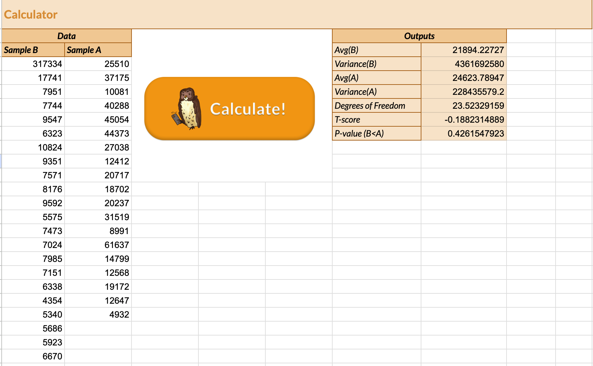
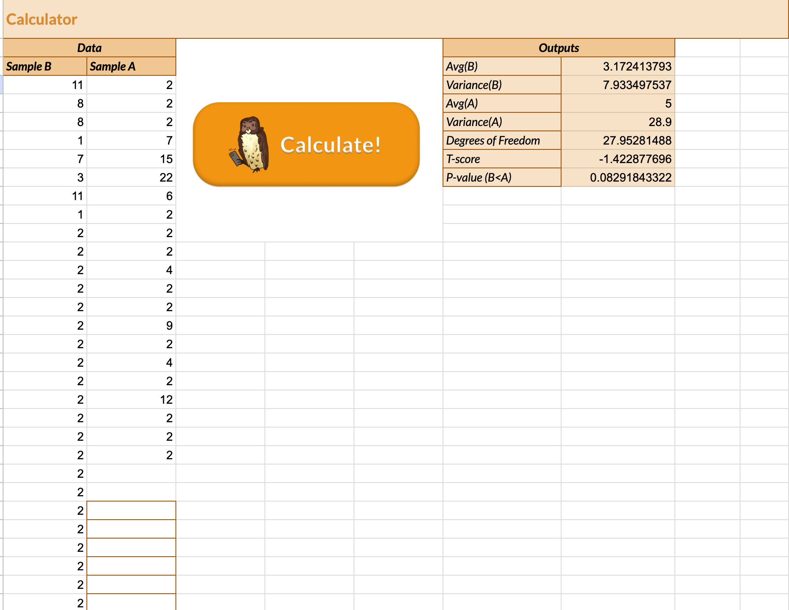

The purpose of this assignment is to quantitatively compare two different designs for a user interface. By recording various user interaction metrics, such as number of clicks and whether or not they can complete a given task, across multiple designs, we can use experimental results to determine which design is best.
For my assignment, I chose to improve on a medical dashboard interface. On the left is the original interface design. On the right is my revised version B. I decided to increase the contrast between the text and the button background colors along with an indication of how the appointment options were sorted.
Null Hypothesis: There exists no significant difference in misclick rate between interface A and interface B.
Alternative Hypothesis: There exists a significant difference in misclick rate between interface A and interface B.
Statistical Test: Chi-squared. The metric collected in the data, 'did_misclick', is a categorical variable taking on values of either True or False for
each user interaction. By applying a Chi-squared test towards this variable, we can determine if there is a significant difference in misclick rate between the two interfaces.
Null Hypothesis: There exists no significant difference in the time spent on interface A versus interface B.
Alternative Hypothesis: The time spent on interface B is significantly lower than that of interface A.
Statistical Test: T-test (1-tailed). The metric collected in the data, 'time_on_page', is a continuous variable measuring number of milliseconds spent on the site. A T-test is chosen here to determine if there is any significant difference in the mean time spent on the page between the user experiences with interface A vs. B. I choose a 1-tailed T-test since we want to see if interface B reduces the amount of time spent completing the task on the page, hence a more efficient task process.
Null Hypothesis: There exists no significant difference in the number of clicks on interface A versus interface B.
Alternative Hypothesis: The number of clicks on interface B is significantly less than that of interface A.
Statistical Test: T-test (1-tailed). The metric collected in the data, 'num_clicks', is a discrete numerical variable measuring number of clicks on the site. A T-test is chosen here to determine if there is any significant difference in the mean number of clicks spent on the page between the user experiences with interface A vs. B. I choose a 1-tailed T-test since we want to see if interface B reduces the amount of clicks used to complete the task on the page, hence a more efficient task process.
The following shows the Chi-squared test results for the "did_misclick" metric.
The degrees of freedom represents the minimum number of independent pieces (in this case, categories) of information needed to estimate the parameters of the statistical test.
The Chi-squared value represents the difference between the observed and expected frequences of categories.
The p-value represents the odds of observing that Chi-squared statistic when assuming the null hypothesis is true. The statistical test gives a p-value less than 0.05, meaning we can reject the null hypothesis and claim a significant difference in misclick rate between interface A and interface B.
The following shows the one-tailed T-test results for the "time_on_page" metric. I chose to filter to only cases where the user succeeded in the task since the hypothesis is that the time it takes to complete a task in design B is lower than that of design A. The T-score refers to the difference between the sample means while also accounting for the variance in each sample. The p-value represents the odds of observing the T-score when assuming the null hypothesis is true. The p-value was greater than 0.05, meaning we cannot reject the null hypothesis. There exists no significant difference in the time spent on interface A versus interface B.
The following shows the one-tailed T-test results for the "num_clicks" metric. Similar to the previous metric, the p-value was greater than 0.05, meaning we cannot reject the null hypothesis. There exists no significant difference in the number of clicks on interface A versus interface B.
For the numerical metrics, we can use the average and variance within each group as a preliminary sanity check to see if there exists some difference between two groups. However, it is also important to consider the number of samples we have in each test group when accessing if any observed difference is significant. Please see the screenshots above for the calculated summary statistics!
It seems like the changes I made to the original design may have reduced the amount of misclicks. By increasing the contrast of the buttons, it might have helped some users easily identify the correct button to select when making an appointment. However, I think there are a lot of experimental issues that could skew the results, such as the fact that when doing the experiment, we completed the same task several times, becoming more familiar with the most efficient way to accomplish it.